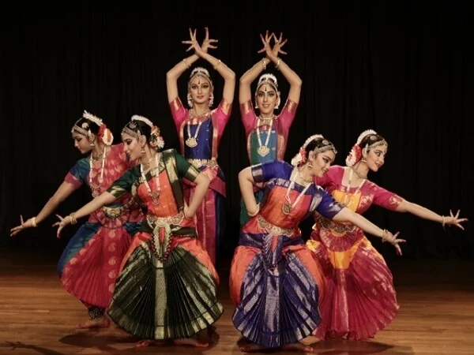
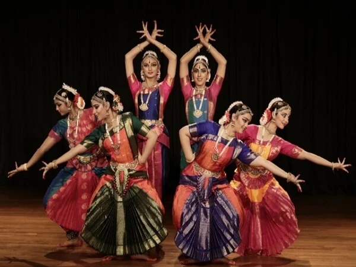

India has a unique culture and is one of the oldest and greatest civilizations of the world. India has achieved all-round socio-economic progress since its Independence. Its government is a constitutional republic that represents a highly diverse population consisting of thousands of ethnic groups and hundreds of languages. India became the world's most populous country in 2023, according to estimates by the United Nations. A unique land of vibrant colours, breathtaking landscapes and rich history, India is unlike any other. From the writhing streets of Mumbai to the idyllic shores of the Andaman Islands, this remarkable country offers a diverse feast for the senses. we have some places in india which are very famous all around th world:TAJ MAHAL , RED FORT,RAM MANDIR.


 India is the largest democracy in the world, the 7th largest country in the world,
and one of the most ancient civilizations. The game of Snakes & Ladders was created by the
13th century poet saint Gyandev. It was originally called 'Mokshapat'.
What is the dance and music in Indian culture?
Sangeet Natak Academy recognizes eight classical dance and music forms, namely Bharatanatyam, Kathak,
Kuchipudi, Odissi, Kathakali, Sattriya.

India is the largest democracy in the world, the 7th largest country in the world,
and one of the most ancient civilizations. The game of Snakes & Ladders was created by the
13th century poet saint Gyandev. It was originally called 'Mokshapat'.
What is the dance and music in Indian culture?
Sangeet Natak Academy recognizes eight classical dance and music forms, namely Bharatanatyam, Kathak,
Kuchipudi, Odissi, Kathakali, Sattriya.

NEXT